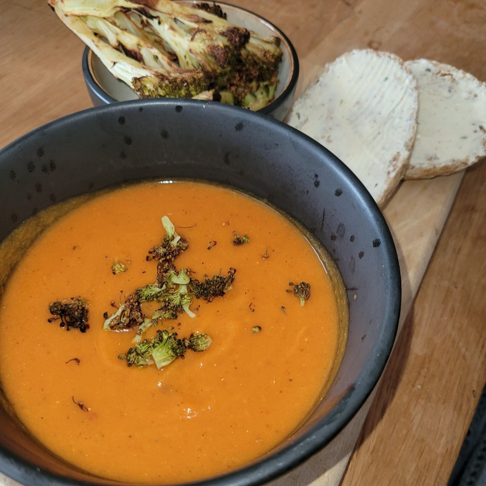
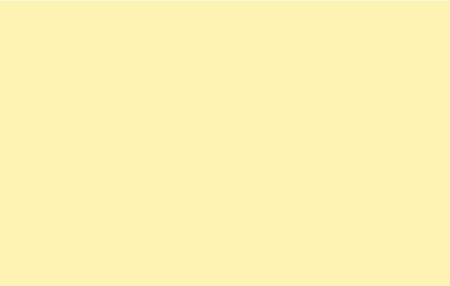
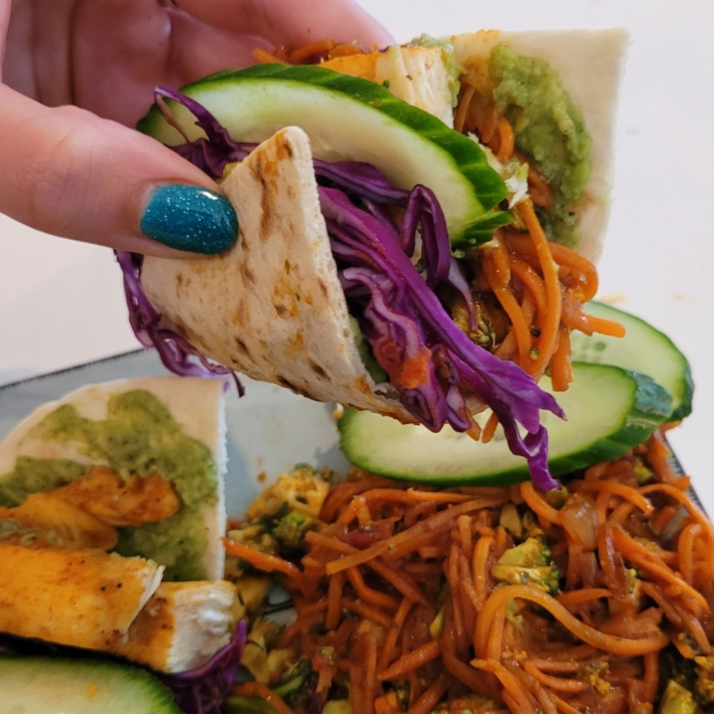
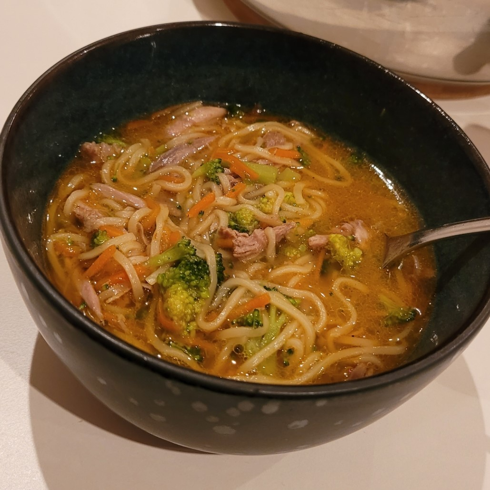

mamma tín
Madens rolle i dag. i dag handler mad ikke kun om at spise for at overleve, men også om at opleve. Mange søger variation i deres måltider og udforsker nye smagskombinationer, ingredienser og køkkener fra hele verden. Madkulturen har udviklet sig til en platform for kreativitet, hvor amatørkokke og professionelle kokke skubber grænserne for, hvad der er muligt på en tallerken.
Derudover har mad en tæt forbindelse til sundhed og velvære. Med den stigende bevidsthed om kostens indflydelse på vores fysiske og mentale LÆS MERE..

Overskud til Madlavning: Hvordan Søvn, Kost og Motion Spiller Sammen
For mange kan det være en udfordring at finde overskuddet til at lave sund mad i en travl hverdag. Her kommer søvn, kost og motion ind i billedet som essentielle faktorer, der påvirker vores energiniveau og motivation. Det er vigtigt at integrere sunde vaner i hverdagen for at fremme overskuddet til madlavning.
LÆS MERE...

i dag handler mad ikke kun om at spise for at overleve, men også om at opleve. Mange søger variation i deres måltider og udforsker nye smagskombinationer, ingredienser og køkkener fra hele verden. Madkulturen har udviklet sig til en platform for kreativitet, hvor amatørkokke og professionelle kokke skubber grænserne for, hvad der er muligt på en tallerken.
Derudover har mad en tæt forbindelse til sundhed og velvære. Med den stigende bevidsthed om kostens indflydelse på vores fysiske og mentale LÆS MERE..